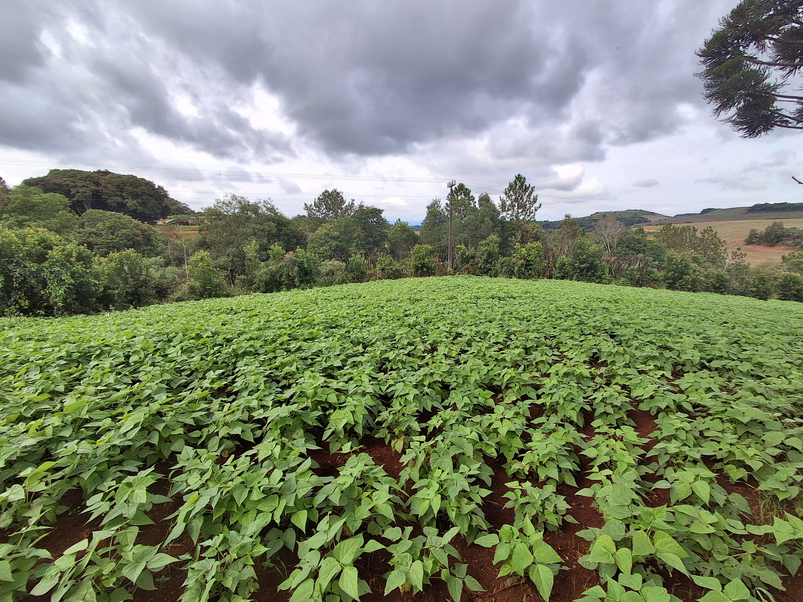
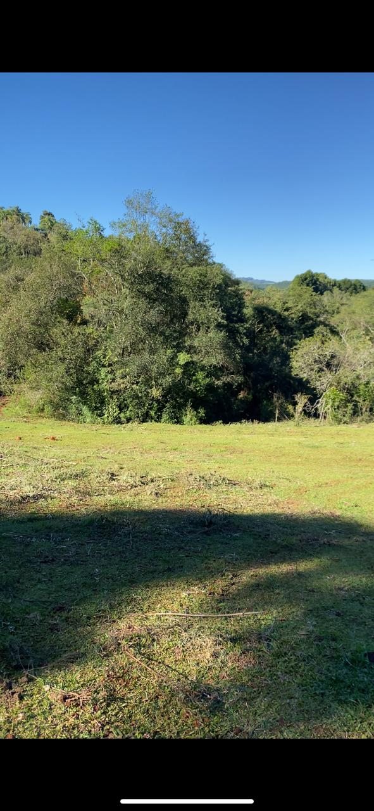
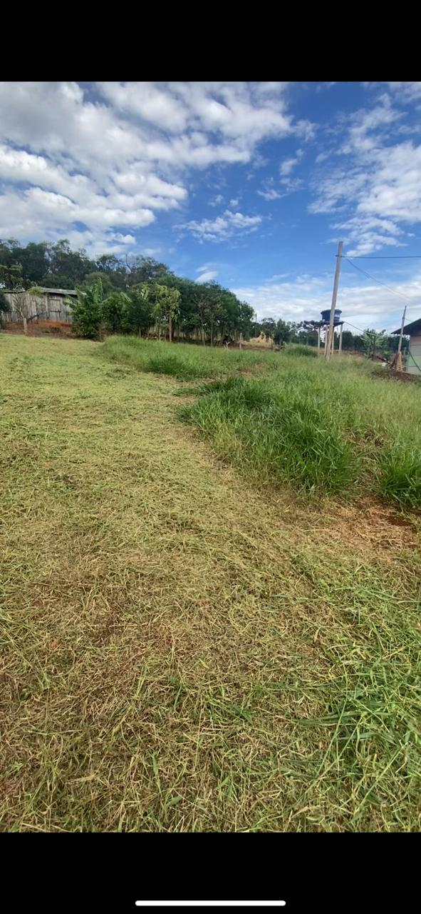
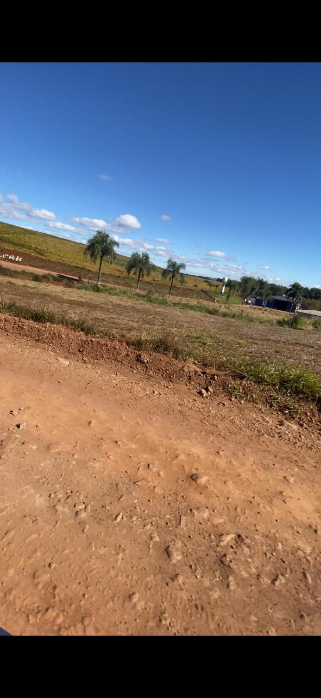
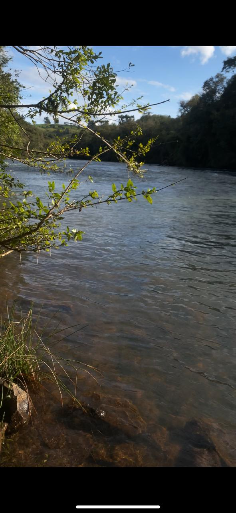
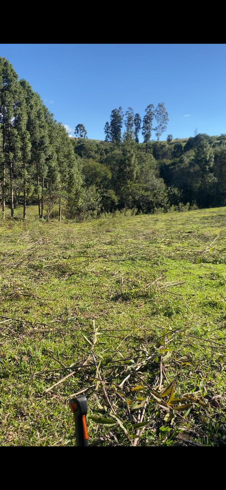
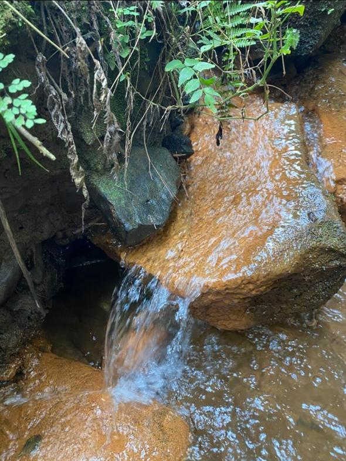
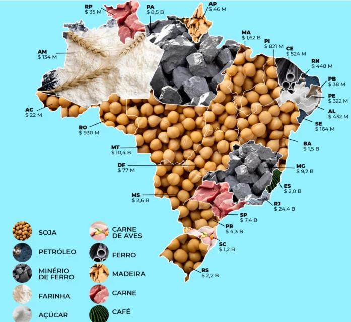

A tecnologia agrícola reforça o papel do Brasil na construção de um futuro mais inteligente, produtivo e sustentável.
Eficiência Agrícola
Economia de Água
Redução de Custos
Menos Desperdício
A agricultura sustentável ganha espaço no debate global em um momento de pressão sobre custos, segurança alimentar, energia e mudanças climáticas.
O Brasil se destaca por unir produtividade, tecnologia, pesquisa científica e capacidade de adaptação no campo.
Enquanto temas como Inteligência Artificial, guerras comerciais e a nova corrida energética dominam discussões internacionais, uma revolução silenciosa acontece nas lavouras brasileiras.
O país assume papel estratégico na produção sustentável de alimentos para o mundo.
Identificação rápida de problemas e análise precisa das lavouras.
Coleta de dados em tempo real sobre solo e plantações.
Processamento de grandes volumes de informações agrícolas.
Máquinas autônomas e agricultura de precisão.
Antecipação de eventos meteorológicos extremos.
Menor desperdício e maior eficiência.






Agricultura predominantemente manual.
Chegada dos tratores modernos.
Agricultura de precisão.
IA, drones e sensores inteligentes.

Tem dúvidas sobre o projeto AgroForte 2026? Entre em contato para saber mais sobre agricultura sustentável, tecnologia no campo e as iniciativas apresentadas neste trabalho.